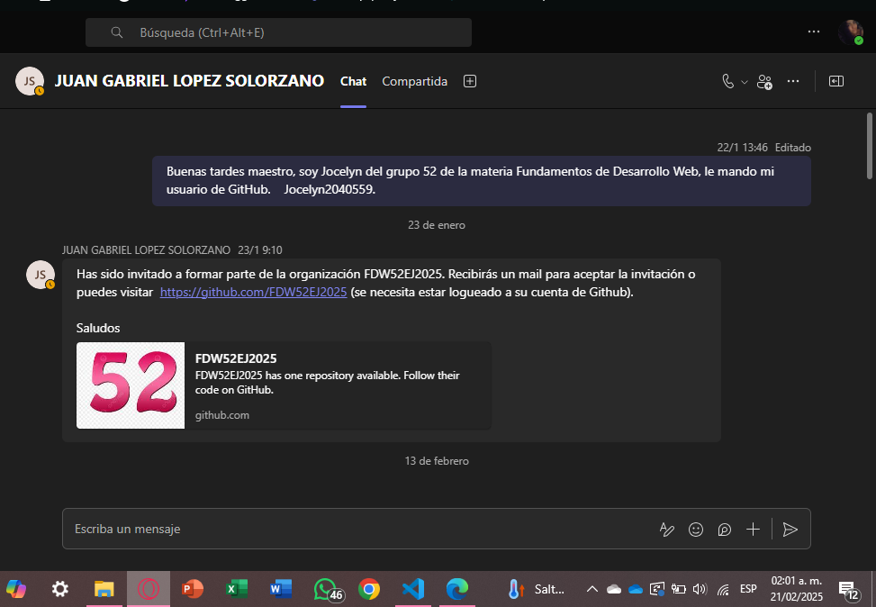
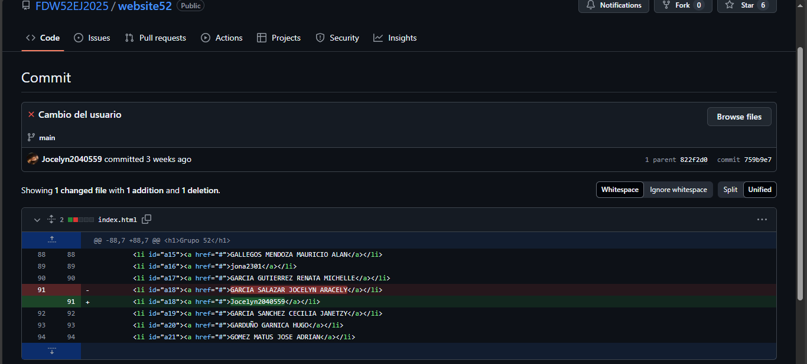
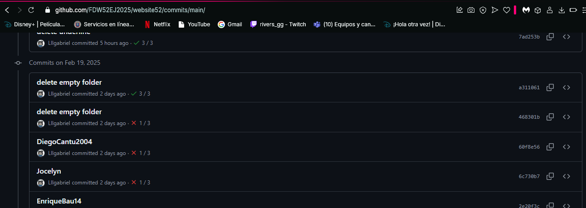

Practica 1
Crear cuenta github y mandar mensaje por chat de Teams
Practica 2
Publicar pagina web sencilla en cuenta personal Github.
Fecha commits: 29 al 31 de enero.
Practica 3
Modificar página pasatiempos. Utilizando 5 archivos html empleando etiquetas de estructura (header,nav, main,aside,footer) con etiquetas de estructura (nav).
Fecha commits: 5 al 7 de febrero.
Practica 4
Modificar link personal, quitar nombre completo y poner usuario
Practica 5
El sitio web personal sobre sus pasatiempos debe ser modificado y cargado a la organización dentro de su carpeta personal. Se deben agregar nuevas etiquetas.
Fecha commits: 12 al 14 de febrero.
Practica 6
Agregar un formulario a su sitio web pasatiempos de la organización.
Fecha commits: 17 al 26 de febrero.
Practica 7
Commit con cuenta del maestro en carpeta personal
commit: Jocelyn
